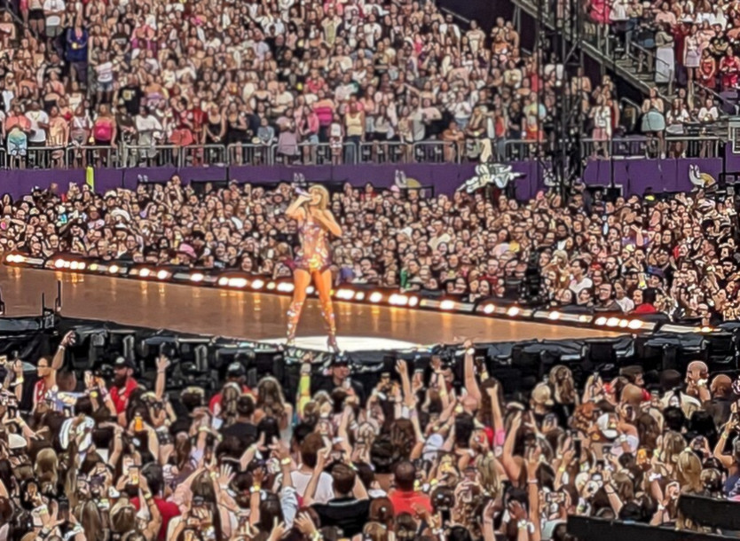
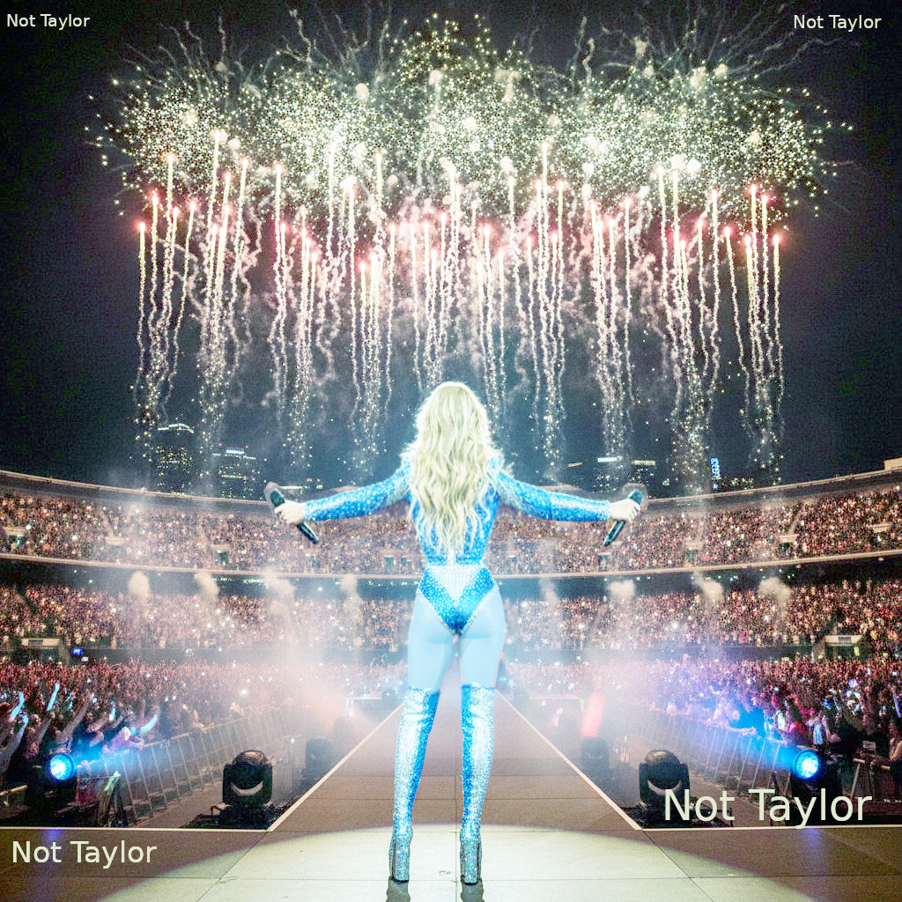

Taylor Swift:
Mega Star, Best Friend
Mega Star, Best Friend
Taylor Swift has become much more than just a pop star; for millions of fans she feels like a close friend. Her journey from a country music singer to a global phenomenon is truly remarkable. Swift has the ability to connect with her audience, make personal experiences feel universal, and turn her talents into a money-making machine, exemplified by her record-breaking tours.
Relatable Songwriting
One key to Taylor Swift's immense popularity is her relatable songwriting. She has a unique talent for transforming her own experiences—from first loves and heartbreaks to facing public scrutiny and personal growth—into lyrics that listeners can relate to. For fans, who are often experiencing intense emotions and significant life changes themselves, Swift's songs offer a sense of understanding and validation. She sings about insecurities, friendships, and the complexities of relationships in a way that makes fans feel seen and understood, as if she is speaking about their own thoughts and feelings.
The Swifties Community
Beyond her lyrical genius, Swift has developed a powerful sense of community among her fans, known as "Swifties." She actively engages with her audience through social media. She sometimes surprises her fans with personal gifts and has invited selected fans to her actual home for private listening parties called "Secret Sessions." This direct connection fosters a feeling of genuine friendship and loyalty, where fans feel part of something bigger. This strong bond goes beyond just enjoying music; it builds a community where people can share their experiences and connect with others who understand them.
The Eras Tour

Showcasing her power as a global entertainer and businesswoman, her "Eras Tour" generated over $2 billion in revenue, making it the highest-grossing tour of all time. This immense success is not just about numbers; it represents millions of people coming together to celebrate her music and the stories she tells. The tour is a powerful shared experience, uniting fans from all over the world in a collective celebration of her music.
Why It Matters

In conclusion, Taylor Swift's significant success comes from her talent for combining relatable storytelling with meaningful fan connections and strong ambition. She shares her personal experiences through songs which help people to feel understood. Her ability to grow as an artist while staying true to herself and her fans shows why she's not just a mega star, but a friend to millions of people worldwide.
note: Taylor Swift recently surpassed a net worth of $2 billion dollars, making her the richest female in music history. Unlike other celebrity billionaires who built their fortunes through cosmetics or brand deals, Swift became the first musician to reach this status almost entirely through her music.